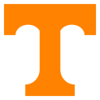
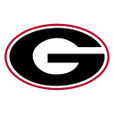

Where will College GameDay be?
A guess, for fun. ESPN announces each week's location the Monday before, so as of Week 12 the show's stops through Week 13 are known. Here is the rest, from what has won the show's attention in past seasons and what the season simulation says about who will be ranked where. Not an official anything, and not a ranking.
Confirmed
| Wk | Date | Game | Site |
|---|---|---|---|
| 1 | Sep 5 | Baton Rouge, LA | |
| 2 | Sep 12 | Austin, TX | |
| 3 | Sep 19 | Oxford, MS | |
| 4 | Sep 26 | Texas at  Tennessee |
Knoxville, TN |
| 5 | Oct 3 | Iowa City, IA | |
| 6 | Oct 10 |  Georgia at |
Tuscaloosa, AL |
| 7 | Oct 17 | Provo, UT | |
| 8 | Oct 24 | Salt Lake City, UT | |
| 9 | Oct 31 | Bloomington, IN | |
| 10 | Nov 7 | South Bend, IN | |
| 11 | Nov 14 | Boise, ID | |
| 12 | Nov 21 | Virginia Tech at |
Miami Gardens, FL |
| 13 | Nov 28 | Winston-Salem, NC |
The forecast
Each row is a game's chance of being the one, out of every game that week, averaged over 4,000 simulated seasons. The rankings in those seasons come from the same résumé-heavy blend the season simulation uses for the committee. About 5% of the time, every week, the show goes somewhere that is not an FBS game at all.
Conference championship week · Dec 4
| Chance | Game | Site | Why |
|---|---|---|---|
| 56% | SEC championship game | wherever it is played | usually ranked around #4 and #1 · both top 10 in 100% of seasons |
| 28% | Big 12 championship game | wherever it is played | usually ranked around #12 and #5 · both top 10 in 16% of seasons |
| 7.6% | ACC championship game | wherever it is played | usually ranked around #12 and #7 · both top 10 in 53% of seasons |
| 2.5% | Big Ten championship game | wherever it is played | usually ranked around #10 and #10 · both top 10 in 49% of seasons |
| 0.1% | Conference USA championship game | wherever it is played | usually ranked around #87 and #47 |
| <0.1% | Mountain West championship game | wherever it is played | usually ranked around #77 and #52 |
| 0.1% | Every other game (4 of them) | ||
| 5.3% | Somewhere off the schedule — an FCS game, a surprise |
Who is likely to host from here
| Team | Hosts at least once, Week 14 | Plays in a stop at least once |
|---|
Army–Navy
GameDay went to Army–Navy every year from 2014 to 2021 and has not since. We give it about 10% for the December game, weighted toward the last four years, in which it went 0 times.
How it works, and how well
The model is a choice among the week's games. Each game gets a score from a handful of things about the two teams, and its chance is its share of the week's total. The big ones: how highly the worse of the two teams ranks, where each doubling of its rank roughly halves a game's chances (to 50% of what they were); whether both teams are in the top 25, which makes a game about 2.7 times as likely; and losses, each of which, between the two teams, cuts its chances by about 62%. Smaller: how the teams ranked last season, and how often GameDay has wanted them lately, which is a fair definition of a brand.
The show does not like to return to the same campus: a host that has already hosted this season has its game's chances cut to 63% of what they were. GameDay has gone back to a host that had already hosted that season at 11 of 129 regular-season stops since 2014, so this is a discount, not a rule. The discount is applied only to hosts already announced, so a school that might host twice before the season ends is not marked down for a stop that has not happened yet. This year it has not yet gone back to a host. It has featured LSU, Ohio State, Texas, Notre Dame and Miami (FL) more than once, but never as the host twice.
What did not help, once the rankings were known: whether GameDay had already visited either team this season, as host or guest, how recently the host had hosted, how close the game is expected to be, and whether the host is in the SEC or Big Ten.
Two tests, both on 2014–2025 (2020 aside). Given the real rankings for each week, the model picks the actual GameDay game out of about 52 candidates first 65% of the time and in its top three 89% of the time, leaving each season out in turn (a coin toss among the games would be 2%). The harder test is this page's job: stand at the end of Week 3, simulate the rest of the season, and forecast every stop from Week 8 to the championship game. Across 69 stops, the real site was the model's first choice 42% of the time, in its top three 65%, and in its top five 78%.
What we got wrong: games that are big for reasons the ratings cannot see. Week 13 is the current example.
| Wk | Announced | Our chance | Our rank | Our first choice |
|---|---|---|---|---|
| 13 | 2.4% | #6 |
Those weeks were announced before this page existed and were not used to fit anything, which makes them the one live test. Early-season stops lean on preseason reputation more than the model does; it was built for Week 8 on.
Past locations from NCAA.com's history of the show; announcements from ESPN.